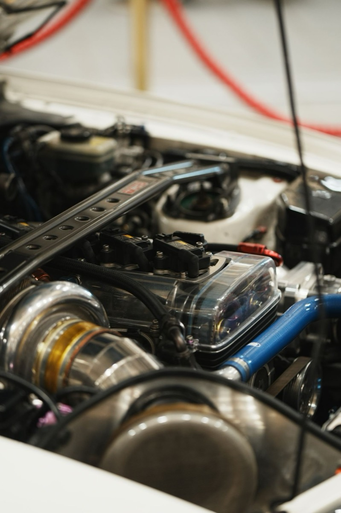
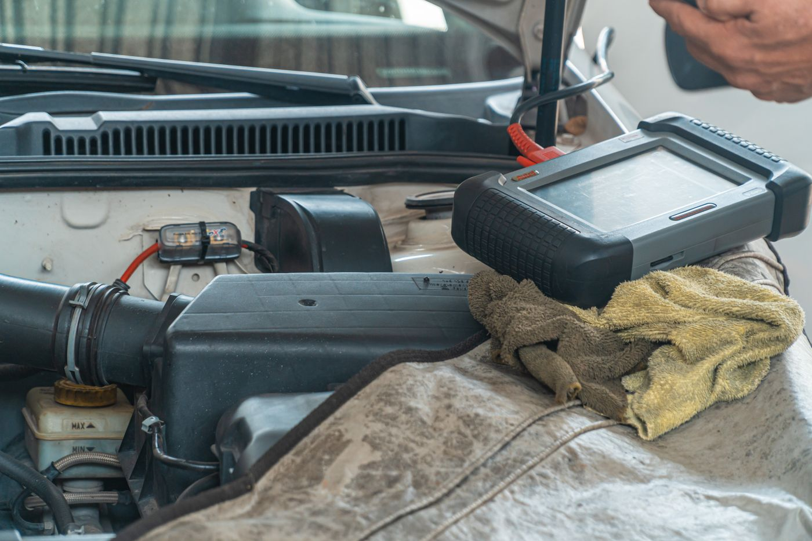
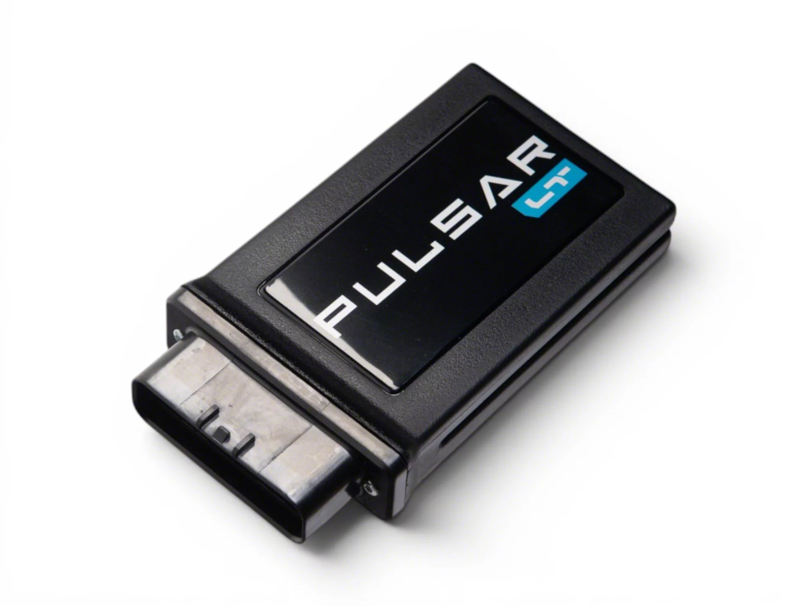
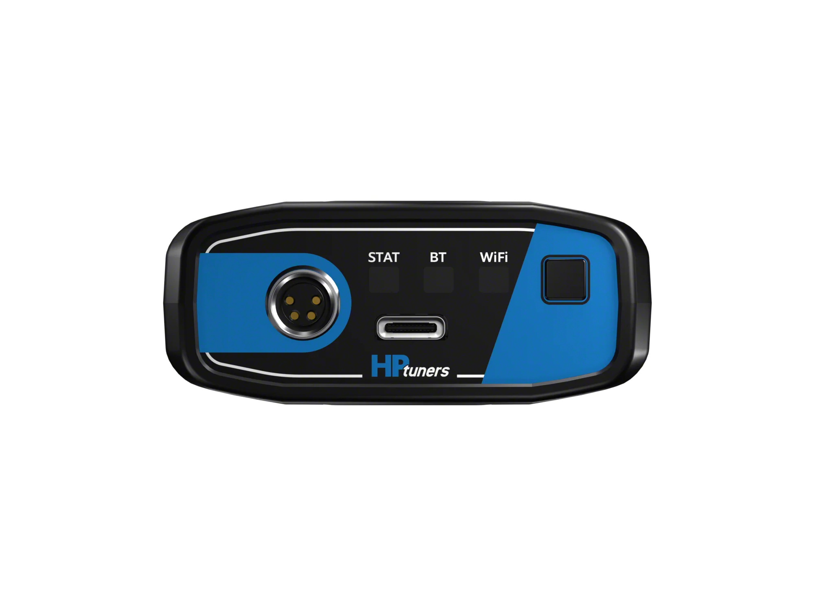
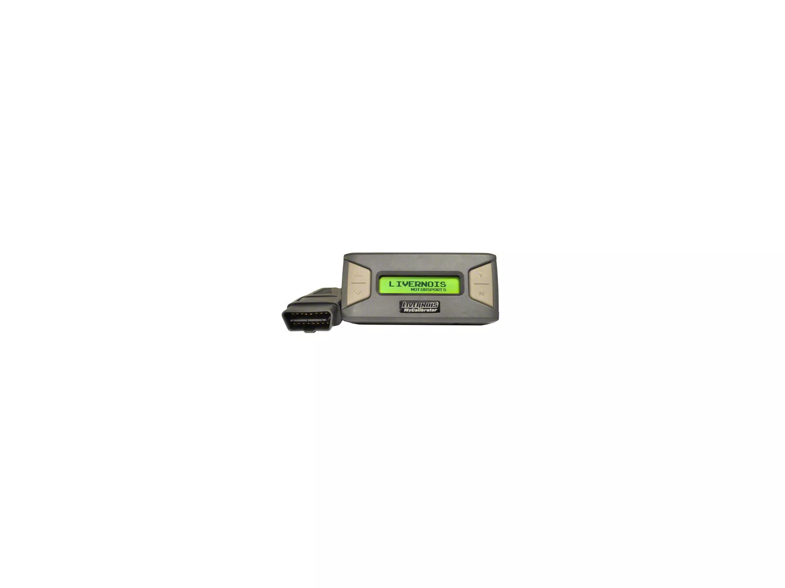

Tuning Explained: Flash, Piggyback, and Standalone — and the Warranty Conversation
Tuning is the highest-return modification per dollar on any turbocharged engine, and the one with the most consequences. This is the guide we'd want before spending money, not a sales pitch for a specific device.

Tuning is the highest-return modification per dollar on any turbocharged engine, and the one with the most consequences. This is the guide we’d want before spending money, not a sales pitch for a specific device.
The three approaches
ECU flash (reflash). A license and a device (or a bench flash at a shop) let you overwrite the factory calibration directly. This gives full control over fuel, ignition timing, boost targets, throttle mapping and, on automatic cars, transmission shift logic. It’s the most capable option short of standalone, and the only one that changes how an automatic transmission behaves.
Common platforms do this with a handheld device that stores your stock map and lets you switch between tunes. Price is typically several hundred dollars for the device plus a license, then per-map costs.
Piggyback. An inline module that intercepts sensor signals and modifies them before the factory ECU sees them: adding fuel pressure, altering the manifold pressure signal, and so on. The factory ECU stays in place and unaware.
Advantages: removable in minutes, often undetectable at the dealer, cheaper, and preserves the factory calibration’s safety strategies. Disadvantages: the factory ECU is fighting the piggyback’s corrections, so it can learn around them over time; adaptation limits vary by platform; and it can’t change transmission logic at all. On some platforms piggybacks work extremely well, on others the ECU eventually trims them out.
Standalone. A complete replacement ECU. Total control, and total responsibility. Cold start, idle quality, every emissions device, and every safety strategy now depend on your calibration. Appropriate for a dedicated race car or a heavily built engine. Not appropriate for a daily driver, and not something to learn on.
What the gains look like
We won’t give you a horsepower number, because it depends enormously on fuel octane, altitude, ambient temperature, the specific platform, and whether supporting hardware is installed. What is generally true:
- Turbo engines gain far more from a tune than naturally aspirated ones. On a turbo, the tune changes boost targets, a large lever. On an NA engine, the tune can only optimize fuel and timing, a small lever.
- Fuel quality is a hard constraint. A tune written for 93 octane will knock and pull timing on 91, and can be dangerous on lower grades. Never run a tune on fuel it wasn’t calibrated for.
- Supporting hardware matters. A tune on stock hardware is limited by the hardware. A tune plus a high-flow downpipe on a turbo car is where the real numbers live.
- The first gains feel dramatic; the next ones get expensive. Stage 1 to Stage 2 often costs several times more for a fraction of the additional gain.

The warranty conversation
This is the part the marketing skips. Be clear-eyed about it:
In the United States, the Magnuson-Moss Warranty Act generally prevents a manufacturer from voiding your entire warranty simply because an aftermarket part is installed. The burden is on the manufacturer to show that the aftermarket part caused the specific failure being denied. In practice:
- The ECU records things. Most modern ECUs log flash counters, boost history, and adaptation values. A dealer can often see that a calibration was changed. “They can’t tell” is usually false on a modern car.
- A related failure is the real risk. If you tune for more boost and the turbocharger fails, expect a fight. That’s a directly causally related failure, which is exactly what Magnuson-Moss doesn’t protect against.
- An unrelated failure should still be covered. A failed window regulator or infotainment unit has no causal relationship to your tune. You may still have to argue about it, but you should win.
- Warranty law varies by country. EU consumer protections differ, as do Korean (PIPA-adjacent consumer law) and other jurisdictions. Check your own jurisdiction rather than assuming US rules apply.
Practical advice: understand your platform’s detectability, keep your stock map and a way to restore it, keep receipts for every part, and know that restoration does not always erase a flash counter. If you can’t afford to fix something out of pocket, don’t tune it.
Supporting hardware order of operations
If the goal is real performance rather than just a number, the sequence matters:
- Verify the car is healthy first. Compression or leak-down test, fresh plugs, no existing fault codes. Tuning a sick engine makes it sicker.
- Tires and brakes. Worth saying out loud: more power without more grip and stopping power is a worse car.
- Intake and downpipe, if the platform benefits. On turbo cars the downpipe is usually the biggest hardware gain.
- The tune, calibrated for the hardware actually installed.
- Cooling, if you’ll use the power repeatedly: intercooler, oil cooler, transmission cooler.
Doing 4 before 3 means paying for a tune twice.
Data logging is not optional
A tune without logging is guesswork. Learn to log at minimum: boost pressure, air-fuel ratio, ignition timing and knock retard, intake air temperature, and fuel trims. Look for knock retard under load and fuel trims deviating far from zero. Those are the signals that something is wrong before it becomes a failure.
Log a pull in third or fourth gear, in a safe location, within legal speeds. Review the data. If you don’t know what you’re looking at, find a tuner who will explain your log rather than just sell you the next stage.
Choosing an approach
Take the piggyback if you want removable, modest gains and can’t risk the dealer relationship. Take the ECU flash if you want the real result and accept the warranty risk. That’s what most people want. Leave the standalone to a dedicated build with someone competent calibrating it.
Tune for the fuel you can actually buy, support it with the hardware the calibration assumes, and log it. The power is real. So is the warranty trade.
What the three approaches cost
Prices and review counts as the listings showed them on 4 November 2026. These are ordered by how reversible they are, which is the same axis as the warranty risk this article has been describing.

Edge Pulsar LT Inline Control Module (19–21 V8 Silverado 1500)
This is the piggyback option from the section above: an inline module that sits between the truck and its sensors, adjusts throttle response and a few behaviours, and comes back out again. It does not reflash the ECU, which is precisely why it is the pick for anyone who cannot risk the warranty conversation.
132 reviews is the strongest evidence base of any tuner we looked at for this truck. Understand what it is not: it does not change boost targets the way a flash does, so it delivers throttle sharpness and drivability rather than the full result.
What the 132 reviews do say is worth reading closely, because the failure mode here is not a bad part, it is a wrong truck. The average is 4.76, but 2.3% of owners give it one star — and they share a cause. This listing is for 2019–2021 and the 2022 LD, and the Silverado owners who bought outside that range report a module that will not talk to the truck: "Very disappointed, did not work with my ZR2 there is nothing out yet for my truck." The same complaint appears on the Sierra version of the listing, from a 2023 owner: "Forget the 12th digit of the VIN. This module will not support a 2023. Took the time and expense to install and my truck would not even start." Buyers who scanned the year range rather than checking their own VIN lost an afternoon and a return.
The complaint that should actually stop you is different, and it is one review rather than a pattern: "It worked very well until it caused the truck to go into safe mode and I wanted to return it but American Trucks said it was passed the return [...]" One account is not proof that a piggyback module will put a truck into limp mode, and plenty of owners run these for years without trouble. But it is the specific risk of an inline module — it sits in the middle of a sensor path the ECU trusts — and it is why this card says buy it for drivability and reversibility, not for output.
- Price
- $649.95
- Fitment
- 2019–2021 V8 Silverado 1500 (2022 LD)
- Type
- Inline piggyback module
- Reversible
- Yes — unplug and remove
- Owner reviews
- 132
See the Edge Pulsar LT → list price checked 4 Nov 2026

HP Tuners MPVI4 with 8 Universal Credits (22–26 V8 Silverado 1500)
This is the ECU flash route: MPVI4 hardware plus the credits needed to license and write a calibration. It is the only thing on this page that changes boost targets and shift logic, which the earlier section identifies as where the measurable change actually lives.
Buy it knowing exactly what it is. Credits are consumed licensing a specific vehicle, the calibration is only as good as whoever writes it, and a flashed ECU is the modification most likely to be detected and most likely to affect a powertrain warranty claim. No review count is published on this listing, which is itself worth noticing at this price.
- Price
- $799.91
- Fitment
- 2022–2026 V8 Silverado 1500
- Type
- ECU flash — hardware plus 8 credits
- Reversible
- Yes, but the flash is logged
See the HP Tuners MPVI4 → $799.91, 37 reviews, checked 11 Nov 2026

Livernois Motorsports MyCalibrator Touch Tuner (14–20 5.3L Silverado 1500)
A hand-held flash device with a calibration from a tuner with a long history on GM trucks, for the 2014–2020 5.3L. This is the closest thing here to the "one purchase, one known-good calibration" approach — you are buying someone else's work rather than a toolkit and a learning curve.
That is the trade: less control, less risk of writing a bad file yourself. If you want to learn calibration, this is not the product for you.
- Price
- $599.99
- Fitment
- 2014–2020, 5.3L Silverado 1500
- Type
- Hand-held flash with supplied calibration
- Owner reviews
- 13
See the MyCalibrator → list price checked 4 Nov 2026
None of these listings states a CARB executive order number or a certification status, and tuning is the modification most likely to fail an emissions inspection. If your state inspects, confirm legality for your specific truck before ordering. We are not going to imply compliance the listings do not claim.
No horsepower or torque gains are printed here, because none of these listings publishes a verified figure and we did not test any of them. Any number on this page pretending otherwise would be invented.
Frequently asked questions
What is the difference between a flash tune, a piggyback and a standalone?
They are three different approaches to the same problem, and they differ in what they can change and what they cost. The guide compares all three directly.
Will a tune void my warranty?
The warranty conversation is worth having before you buy rather than after, which is why it has its own section. The answer depends on the vehicle and the dealer, so the guide frames it as a conversation rather than a yes or no.
Do I need supporting hardware before tuning?
There is an order of operations for supporting hardware, and doing it out of order is what turns a tune into a repair bill.
Is data logging really necessary?
Yes. The guide treats data logging as not optional, because it is how you know the tune is doing what it claims on your vehicle.
Topics
- Engine & Intake
- Edge
- HP Tuners
- Livernois
- Silverado 1500
- 5.3L